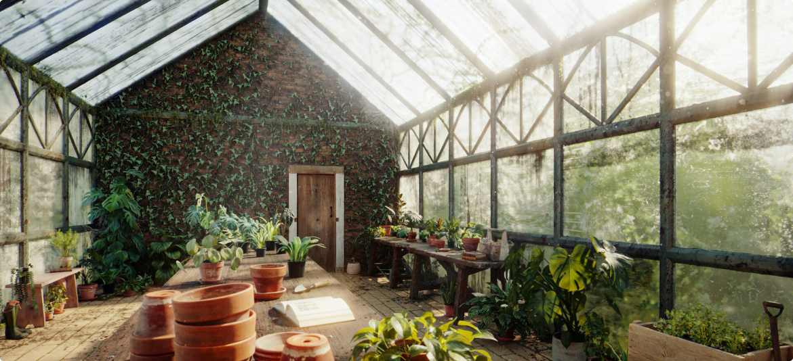

Введение
Люди давным-давно научились изображать разнообразные предметы, которые встречаются в повседневной жизни. Чтобы в точности передавать все геометрические параметры объектов, были разработаны правила составления чертежей, на которых объемные фигуры получают свое отображение в многочисленных проекциях.
В течение многих лет объем изображали художники, однако полотно, на котором писались картины, всегда оставалось двумерным, и на объект можно было смотреть только с одного ракурса. С развитием технологий появилось значительно больше возможностей в области моделирования.
При помощи компьютерных программ можно строить 3D-модели, которые более наглядно представляют объекты и даже окружающее пространство:
В современном мире, где технологии с каждым днем упрощают человеческую жизнь, 3D -моделированием занимаются компьютеры. Строить объемные изображения можно буквально на «пустом месте», руководствуясь приблизительными данными о визуализации объекта (к примеру, спроектировать персонажа видеоигры, у которого нет прототипа в реальном мире). Данный прием называется компьютерным моделированием.
3D-моделирование — это процесс создания трехмерной модели объекта.
Задача 3D-моделирования — разработать визуальный объемный образ желаемого объекта. С помощью трехмерной графики можно и создать точную копию конкретного предмета, и разработать новое, даже нереальное представление до сего момента не существовавшего объекта.
Существует еще такой вариант, как создать 3D-модель , основываясь на многочисленных фотографиях объекта с различных ракурсов.
К основным видам 3D-моделирования относят:
- Полигональное моделирование
- Сплайновое моделирование
- NURBS моделирование
- 3D-скульптинг
- Промышленное моделирование
Базовый процесс создания трехмерной модели включает три этапа:
- Моделирование
- Визуализация
- Вывод модели (печать либо на монитор)
Моделирование - создание модели из ничего, проектирование с помощью программных средств, задание соответствующих размеров, текстур, освещения. Создается, так сказать, каркас объектов, описывается математическими формулами.
Следующим этапом является рендеринг (англ. render - визуализация) - преобразование сырого каркаса в приятную для глаза форму, закругление углов, отображение света, отображение текстур. Осуществляется с помощью программных средств.
Вывод на печать, либо на экран монитора полученной визуальной модели - последний этап. Передовые технологии не стоят на месте, ученые изобретают новинки техники, к ним и относятся 3D-мониторы и 3D-принтеры.
В настоящее время создание и использование 3D-моделей находит применение в различных областях деятельности: образовании и науке; медицине; сфере развлечений; промышленности; нефтяной и газовой индустрии; строительстве; картографии; управлении природными ресурсами; экологическом мониторинге; в туризме. Широко трёхмерное моделирование применяется в формировании данных для кадастровых (землеустроительных, градостроительных) систем. Большую популярность имеют интерактивные цифровые модели городов, с помощью которых решаются задачи городского планирования, управления транспортом, защита от шума и др.
Все эти этапы создания и виды моделей мы размберем более подробно в соответствующих разделах.
Для того чтобы создать 3D-объект , необходимо воспользоваться компьютерной программой, которая предоставит необходимый инструментарий и шаблоны для проектировщика. Рассмотрим самые популярные программы, которые позволяют осуществить компьютерное моделирование.